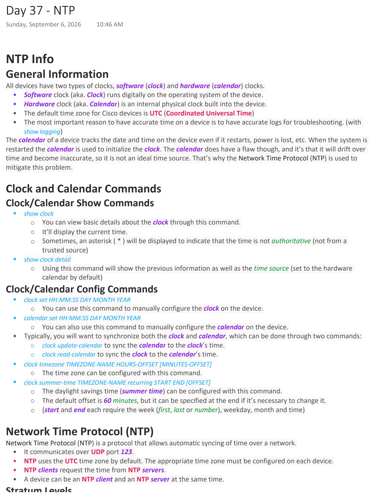
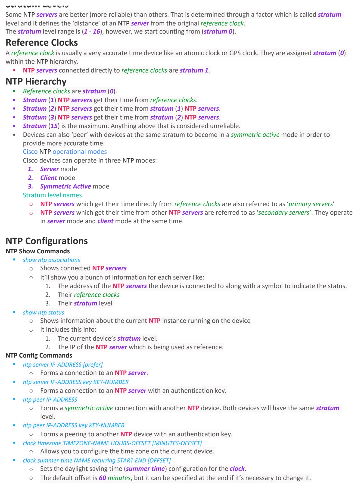
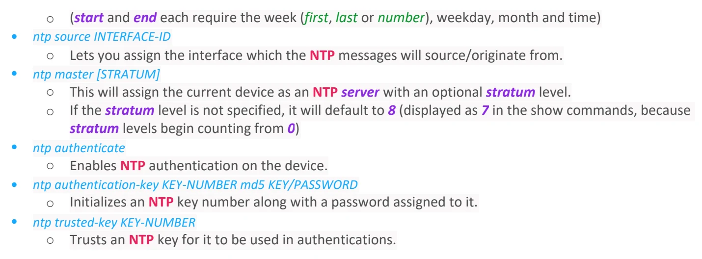

Day 37 / 63 · Network services
NTP
Original notes and diagrams from my OneNote notebook.
NTP
Download original PDF


Text view — NTP
Extracted from the original export. Diagrams and some formatting appear in the notes above.
Day 37 - NTP Sunday, September 6, 2026 10:46 AM NTP Info General Information All devices have two types of clocks, software (clock) and hardware (calendar) clocks. • Software clock (aka. Clock) runs digitally on the operating system of the device. • Hardware clock (aka. Calendar) is an internal physical clock built into the device. • The default time zone for Cisco devices is UTC (Coordinated Universal Time) • The most important reason to have accurate time on a device is to have accurate logs for troubleshooting. (with show logging) The calendar of a device tracks the date and time on the device even if it restarts, power is lost, etc. When the system is restarted the calendar is used to initialize the clock. The calendar does have a flaw though, and it’s that it will drift over time and become inaccurate, so it is not an ideal time source. That’s why the Network Time Protocol (NTP) is used to mitigate this problem. Clock and Calendar Commands Clock/Calendar Show Commands • show clock ○ You can view basic details about the clock through this command. ○ It’ll display the current time. ○ Sometimes, an asterisk ( * ) will be displayed to indicate that the time is not authoritative (not from a trusted source) • show clock detail ○ Using this command will show the previous information as well as the time source (set to the hardware calendar by default) Clock/Calendar Config Commands • clock set HH:MM:SS DAY MONTH YEAR ○ You can use this command to manually configure the clock on the device. • calendar set HH:MM:SS DAY MONTH YEAR ○ You can also use this command to manually configure the calendar on the device. • Typically, you will want to synchronize both the clock and calendar, which can be done through two commands: ○ clock update-calendar to sync the calendar to the clock’s time. ○ clock read-calendar to sync the clock to the calendar’s time. • clock timezone TIMEZONE-NAME HOURS-OFFSET [MINUTES-OFFSET] ○ The time zone can be configured with this command. • clock summer-time TIMEZONE-NAME recurring START END [OFFSET] ○ The daylight savings time (summer time) can be configured with this command. ○ The default offset is 60 minutes, but it can be specified at the end if it’s necessary to change it. ○ (start and end each require the week (first, last or number), weekday, month and time) Network Time Protocol (NTP) Network Time Protocol (NTP) is a protocol that allows automatic syncing of time over a network. • It communicates over UDP port 123. • NTP uses the UTC time zone by default. The appropriate time zone must be configured on each device. • NTP clients request the time from NTP servers. • A device can be an NTP client and an NTP server at the same time. Stratum Levels Some NTP servers are better (more reliable) than others. That is determined through a factor which is called stratum level and it defines the ‘distance’ of an NTP server from the original reference clock. The stratum level range is (1 - 16), however, we start counting from (stratum 0). Reference Clocks A reference clock is usually a very accurate time device like an atomic clock or GPS clock. They are assigned stratum (0) within the NTP hierarchy. • NTP servers connected directly to reference clocks are stratum 1. NTP Hierarchy • Reference clocks are stratum (0). • Stratum (1) NTP servers get their time from reference clocks. • Stratum (2) NTP servers get their time from stratum (1) NTP servers. • Stratum (3) NTP servers get their time from stratum (2) NTP servers. • Stratum (15) is the maximum. Anything above that is considered unreliable. • Devices can also ‘peer’ with devices at the same stratum to become in a symmetric active mode in order to provide more accurate time. Cisco NTP operational modes Cisco devices can operate in three NTP modes: 1. Server mode 2. Client mode 3. Symmetric Active mode Stratum level names ○ NTP servers which get their time directly from reference clocks are also referred to as ‘primary servers’ ○ NTP servers which get their time from other NTP servers are referred to as ‘secondary servers’. They operate in server mode and client mode at the same time. NTP Configurations NTP Show Commands • show ntp associations ○ Shows connected NTP servers ○ It’ll show you a bunch of information for each server like: 1. The address of the NTP servers the device is connected to along with a symbol to indicate the status. 2. Their reference clocks 3. Their stratum level • show ntp status ○ Shows information about the current NTP instance running on the device ○ It includes this info: 1. The current device’s stratum level. 2. The IP of the NTP server which is being used as reference. NTP Config Commands • ntp server IP-ADDRESS [prefer] ○ Forms a connection to an NTP server. • ntp server IP-ADDRESS key KEY-NUMBER ○ Forms a connection to an NTP server with an authentication key. • ntp peer IP-ADDRESS ○ Forms a symmetric active connection with another NTP device. Both devices will have the same stratum level. • ntp peer IP-ADDRESS key KEY-NUMBER ○ Forms a peering to another NTP device with an authentication key. • clock timezone TIMEZONE-NAME HOURS-OFFSET [MINUTES-OFFSET] ○ Allows you to configure the time zone on the current device. • clock summer-time NAME recurring START END [OFFSET] ○ Sets the daylight saving time (summer time) configuration for the clock. ○ The default offset is 60 minutes, but it can be specified at the end if it’s necessary to change it. ○ (start and end each require the week (first, last or number), weekday, month and time) • ntp source INTERFACE-ID ○ Lets you assign the interface which the NTP messages will source/originate from. • ntp master [STRATUM] ○ This will assign the current device as an NTP server with an optional stratum level. ○ If the stratum level is not specified, it will default to 8 (displayed as 7 in the show commands, because stratum levels begin counting from 0) • ntp authenticate ○ Enables NTP authentication on the device. • ntp authentication-key KEY-NUMBER md5 KEY/PASSWORD ○ Initializes an NTP key number along with a password assigned to it. • ntp trusted-key KEY-NUMBER ○ Trusts an NTP key for it to be used in authentications. Day 37 - NTP Sunday, September 6, 2026 10:46 AM NTP Info General Information All devices have two types of clocks, software (clock) and hardware (calendar) clocks. • Software clock (aka. Clock) runs digitally on the operating system of the device. • Hardware clock (aka. Calendar) is an internal physical clock built into the device. • The default time zone for Cisco devices is UTC (Coordinated Universal Time) • The most important reason to have accurate time on a device is to have accurate logs for troubleshooting. (with show logging) The calendar of a device tracks the date and time on the device even if it restarts, power is lost, etc. When the system is restarted the calendar is used to initialize the clock. The calendar does have a flaw though, and it’s that it will drift over time and become inaccurate, so it is not an ideal time source. That’s why the Network Time Protocol (NTP) is used to mitigate this problem. Clock and Calendar Commands Clock/Calendar Show Commands • show clock ○ You can view basic details about the clock through this command. ○ It’ll display the current time. ○ Sometimes, an asterisk ( * ) will be displayed to indicate that the time is not authoritative (not from a trusted source) • show clock detail ○ Using this command will show the previous information as well as the time source (set to the hardware calendar by default) Clock/Calendar Config Commands • clock set HH:MM:SS DAY MONTH YEAR ○ You can use this command to manually configure the clock on the device. • calendar set HH:MM:SS DAY MONTH YEAR ○ You can also use this command to manually configure the calendar on the device. • Typically, you will want to synchronize both the clock and calendar, which can be done through two commands: ○ clock update-calendar to sync the calendar to the clock’s time. ○ clock read-calendar to sync the clock to the calendar’s time. • clock timezone TIMEZONE-NAME HOURS-OFFSET [MINUTES-OFFSET] ○ The time zone can be configured with this command. • clock summer-time TIMEZONE-NAME recurring START END [OFFSET] ○ The daylight savings time (summer time) can be configured with this command. ○ The default offset is 60 minutes, but it can be specified at the end if it’s necessary to change it. ○ (start and end each require the week (first, last or number), weekday, month and time) Network Time Protocol (NTP) Network Time Protocol (NTP) is a protocol that allows automatic syncing of time over a network. • It communicates over UDP port 123. • NTP uses the UTC time zone by default. The appropriate time zone must be configured on each device. • NTP clients request the time from NTP servers. • A device can be an NTP client and an NTP server at the same time. Stratum Levels Some NTP servers are better (more reliable) than others. That is determined through a factor which is called stratum level and it defines the ‘distance’ of an NTP server from the original reference clock. The stratum level range is (1 - 16), however, we start counting from (stratum 0). Reference Clocks A reference clock is usually a very accurate time device like an atomic clock or GPS clock. They are assigned stratum (0) within the NTP hierarchy. • NTP servers connected directly to reference clocks are stratum 1. NTP Hierarchy • Reference clocks are stratum (0). • Stratum (1) NTP servers get their time from reference clocks. • Stratum (2) NTP servers get their time from stratum (1) NTP servers. • Stratum (3) NTP servers get their time from stratum (2) NTP servers. • Stratum (15) is the maximum. Anything above that is considered unreliable. • Devices can also ‘peer’ with devices at the same stratum to become in a symmetric active mode in order to provide more accurate time. Cisco NTP operational modes Cisco devices can operate in three NTP modes: 1. Server mode 2. Client mode 3. Symmetric Active mode Stratum level names ○ NTP servers which get their time directly from reference clocks are also referred to as ‘primary servers’ ○ NTP servers which get their time from other NTP servers are referred to as ‘secondary servers’. They operate in server mode and client mode at the same time. NTP Configurations NTP Show Commands • show ntp associations ○ Shows connected NTP servers ○ It’ll show you a bunch of information for each server like: 1. The address of the NTP servers the device is connected to along with a symbol to indicate the status. 2. Their reference clocks 3. Their stratum level • show ntp status ○ Shows information about the current NTP instance running on the device ○ It includes this info: 1. The current device’s stratum level. 2. The IP of the NTP server which is being used as reference. NTP Config Commands • ntp server IP-ADDRESS [prefer] ○ Forms a connection to an NTP server. • ntp server IP-ADDRESS key KEY-NUMBER ○ Forms a connection to an NTP server with an authentication key. • ntp peer IP-ADDRESS ○ Forms a symmetric active connection with another NTP device. Both devices will have the same stratum level. • ntp peer IP-ADDRESS key KEY-NUMBER ○ Forms a peering to another NTP device with an authentication key. • clock timezone TIMEZONE-NAME HOURS-OFFSET [MINUTES-OFFSET] ○ Allows you to configure the time zone on the current device. • clock summer-time NAME recurring START END [OFFSET] ○ Sets the daylight saving time (summer time) configuration for the clock. ○ The default offset is 60 minutes, but it can be specified at the end if it’s necessary to change it. ○ (start and end each require the week (first, last or number), weekday, month and time) • ntp source INTERFACE-ID ○ Lets you assign the interface which the NTP messages will source/originate from. • ntp master [STRATUM] ○ This will assign the current device as an NTP server with an optional stratum level. ○ If the stratum level is not specified, it will default to 8 (displayed as 7 in the show commands, because stratum levels begin counting from 0) • ntp authenticate ○ Enables NTP authentication on the device. • ntp authentication-key KEY-NUMBER md5 KEY/PASSWORD ○ Initializes an NTP key number along with a password assigned to it. • ntp trusted-key KEY-NUMBER ○ Trusts an NTP key for it to be used in authentications. Day 37 - NTP Sunday, September 6, 2026 10:46 AM NTP Info General Information All devices have two types of clocks, software (clock) and hardware (calendar) clocks. • Software clock (aka. Clock) runs digitally on the operating system of the device. • Hardware clock (aka. Calendar) is an internal physical clock built into the device. • The default time zone for Cisco devices is UTC (Coordinated Universal Time) • The most important reason to have accurate time on a device is to have accurate logs for troubleshooting. (with show logging) The calendar of a device tracks the date and time on the device even if it restarts, power is lost, etc. When the system is restarted the calendar is used to initialize the clock. The calendar does have a flaw though, and it’s that it will drift over time and become inaccurate, so it is not an ideal time source. That’s why the Network Time Protocol (NTP) is used to mitigate this problem. Clock and Calendar Commands Clock/Calendar Show Commands • show clock ○ You can view basic details about the clock through this command. ○ It’ll display the current time. ○ Sometimes, an asterisk ( * ) will be displayed to indicate that the time is not authoritative (not from a trusted source) • show clock detail ○ Using this command will show the previous information as well as the time source (set to the hardware calendar by default) Clock/Calendar Config Commands • clock set HH:MM:SS DAY MONTH YEAR ○ You can use this command to manually configure the clock on the device. • calendar set HH:MM:SS DAY MONTH YEAR ○ You can also use this command to manually configure the calendar on the device. • Typically, you will want to synchronize both the clock and calendar, which can be done through two commands: ○ clock update-calendar to sync the calendar to the clock’s time. ○ clock read-calendar to sync the clock to the calendar’s time. • clock timezone TIMEZONE-NAME HOURS-OFFSET [MINUTES-OFFSET] ○ The time zone can be configured with this command. • clock summer-time TIMEZONE-NAME recurring START END [OFFSET] ○ The daylight savings time (summer time) can be configured with this command. ○ The default offset is 60 minutes, but it can be specified at the end if it’s necessary to change it. ○ (start and end each require the week (first, last or number), weekday, month and time) Network Time Protocol (NTP) Network Time Protocol (NTP) is a protocol that allows automatic syncing of time over a network. • It communicates over UDP port 123. • NTP uses the UTC time zone by default. The appropriate time zone must be configured on each device. • NTP clients request the time from NTP servers. • A device can be an NTP client and an NTP server at the same time. Stratum Levels Some NTP servers are better (more reliable) than others. That is determined through a factor which is called stratum level and it defines the ‘distance’ of an NTP server from the original reference clock. The stratum level range is (1 - 16), however, we start counting from (stratum 0). Reference Clocks A reference clock is usually a very accurate time device like an atomic clock or GPS clock. They are assigned stratum (0) within the NTP hierarchy. • NTP servers connected directly to reference clocks are stratum 1. NTP Hierarchy • Reference clocks are stratum (0). • Stratum (1) NTP servers get their time from reference clocks. • Stratum (2) NTP servers get their time from stratum (1) NTP servers. • Stratum (3) NTP servers get their time from stratum (2) NTP servers. • Stratum (15) is the maximum. Anything above that is considered unreliable. • Devices can also ‘peer’ with devices at the same stratum to become in a symmetric active mode in order to provide more accurate time. Cisco NTP operational modes Cisco devices can operate in three NTP modes: 1. Server mode 2. Client mode 3. Symmetric Active mode Stratum level names ○ NTP servers which get their time directly from reference clocks are also referred to as ‘primary servers’ ○ NTP servers which get their time from other NTP servers are referred to as ‘secondary servers’. They operate in server mode and client mode at the same time. NTP Configurations NTP Show Commands • show ntp associations ○ Shows connected NTP servers ○ It’ll show you a bunch of information for each server like: 1. The address of the NTP servers the device is connected to along with a symbol to indicate the status. 2. Their reference clocks 3. Their stratum level • show ntp status ○ Shows information about the current NTP instance running on the device ○ It includes this info: 1. The current device’s stratum level. 2. The IP of the NTP server which is being used as reference. NTP Config Commands • ntp server IP-ADDRESS [prefer] ○ Forms a connection to an NTP server. • ntp server IP-ADDRESS key KEY-NUMBER ○ Forms a connection to an NTP server with an authentication key. • ntp peer IP-ADDRESS ○ Forms a symmetric active connection with another NTP device. Both devices will have the same stratum level. • ntp peer IP-ADDRESS key KEY-NUMBER ○ Forms a peering to another NTP device with an authentication key. • clock timezone TIMEZONE-NAME HOURS-OFFSET [MINUTES-OFFSET] ○ Allows you to configure the time zone on the current device. • clock summer-time NAME recurring START END [OFFSET] ○ Sets the daylight saving time (summer time) configuration for the clock. ○ The default offset is 60 minutes, but it can be specified at the end if it’s necessary to change it. ○ (start and end each require the week (first, last or number), weekday, month and time) • ntp source INTERFACE-ID ○ Lets you assign the interface which the NTP messages will source/originate from. • ntp master [STRATUM] ○ This will assign the current device as an NTP server with an optional stratum level. ○ If the stratum level is not specified, it will default to 8 (displayed as 7 in the show commands, because stratum levels begin counting from 0) • ntp authenticate ○ Enables NTP authentication on the device. • ntp authentication-key KEY-NUMBER md5 KEY/PASSWORD ○ Initializes an NTP key number along with a password assigned to it. • ntp trusted-key KEY-NUMBER ○ Trusts an NTP key for it to be used in authentications.